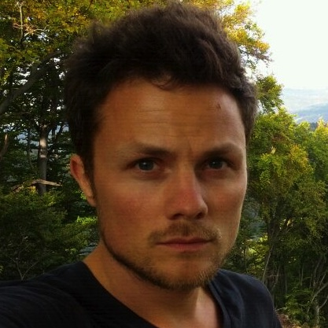

<meta content='width=device-width, initial-scale=1.0, minimum-scale=1.0, maximum-scale=1.0, user-scalable=no'
	name='viewport' />

<link href='css/base.css' rel='stylesheet' type='text/css'>
<link rel="stylesheet" href="css/quicksand.css"/>


<title>max.pub</title>


<style>

	main {
		margin-top: 3rem;
		border-radius: 5px;
		text-align: center;
		padding:0;
		overflow: hidden;
	}

	h1 {
		margin: .7rem;
	}

	h2 {
		margin: .5rem;
		color: gray;
		font-size: 1.3rem;
	}

	.photo {
		width: 100%;

	}

	.biglink img {
		width: 32px;
		vertical-align: bottom;
		margin-right: 5px;
	}

	.biglink {
		font-size: 25px;
		/* color: #333; */
		display: inline-block;
		margin: 0 10px;
	}


</style>


<main>
	

	<h1>Maximilian Fechner</h1>

	<h2>MD & Engineer</h2>

	<p>
		Hi, I'm Max. 
		I studied Computer Science at the universities of
		<a href='https://goo.gl/maps/eYG7T2AXX1EWoZMW8' target='_blank'>Dortmund</a>, 
		<a href='https://goo.gl/maps/fXejGzyjxswdc5iC9' target='_blank'>Freiburg</a> and
		<a href='https://goo.gl/maps/wYiLBT6XeoLs8UP29' target='_blank'>San Sebastian</a>.
		<br/>
		While graduating I decided to pursue another degree in Medicine.
		I took classes at the universities of
		<a href='https://goo.gl/maps/ic1yMKnsQDfacs2eA' target='_blank'>Graz</a> and
		<a href='https://goo.gl/maps/ocXgejBCn1KqDxXZ7' target='_blank'>L&uuml;beck</a> 
		with internships in 
		<a href='https://goo.gl/maps/EcwoZmMJopiJz86x6' target='_blank'>Thailand</a> and
		<a href='https://goo.gl/maps/Ecy5VpvEnNZ6LTD76' target='_blank'>Nicaragua</a>.
		<br/>
		After starting work as a radiologist in 
		<a href='https://goo.gl/maps/BK1sJLKzWKC4aJwp8' target='_blank'>Bremen</a>,
		you can now find me in 
		<a href='https://goo.gl/maps/sMAJ1cr3vrHUEcth8' target='_blank'>Münster</a>.
		<br/>
		All the while I travelled extensively in South Asia, Latin America and Europe,
		picking up solid conversational knowledge in english and spanish along the way.
		<!-- In 2017 I started working as a <a href='https://goo.gl/maps/ar3XFX1qEfL2' target='_blank'>Radiologist</a> in Bremen.  -->
		<!-- before switching to <a>Psychiatry</a> in 2018. -->
	</p>

	<a class='biglink' href='https://www.linkedin.com/in/maxfechner/'>LinkedIn</a>


	<!-- <p> -->
	<!--         I love to be outdoors, travel long and far, read a good history book in my hammock, juggle with computer-code, 
        play volleyball, debate almost any topic, chase ideas, embrace the new... 
        common ground here? Contact me!
 -->
	<!-- The traits I admire and value most in others are curiosity and kindness. -->
	<!-- </p> -->

	<!-- <a href='http://t.me/MaxFechner'>Telegram</a> -->

	<!-- <a href='mailto:web@max.pub'>Email</a> -->
	<!-- <a href='http://t.me/MaxFechner'>Telegram</a> -->
	<!-- <a href='http://m.me/mxmln'>Messenger</a> -->

	<!-- <a href='https://twitter.com/max___pub'> Twitter</a> -->
	<!-- <a href='https://medium.com/@max___pub'> Medium</a> -->
	<!-- <a href='https://github.com/max-pub'> Github</a> -->

	<br />
	<br />
</main>
